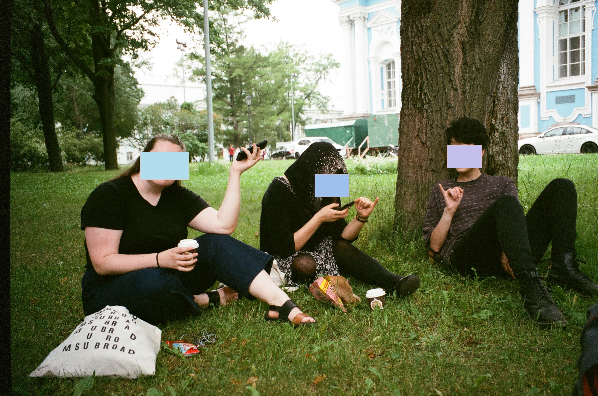
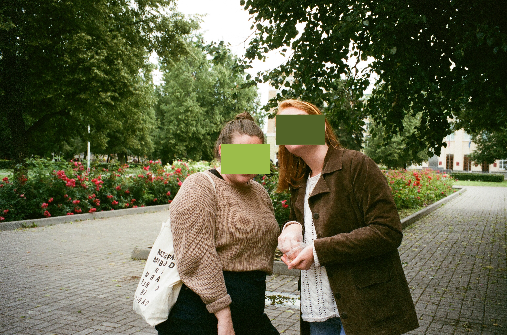
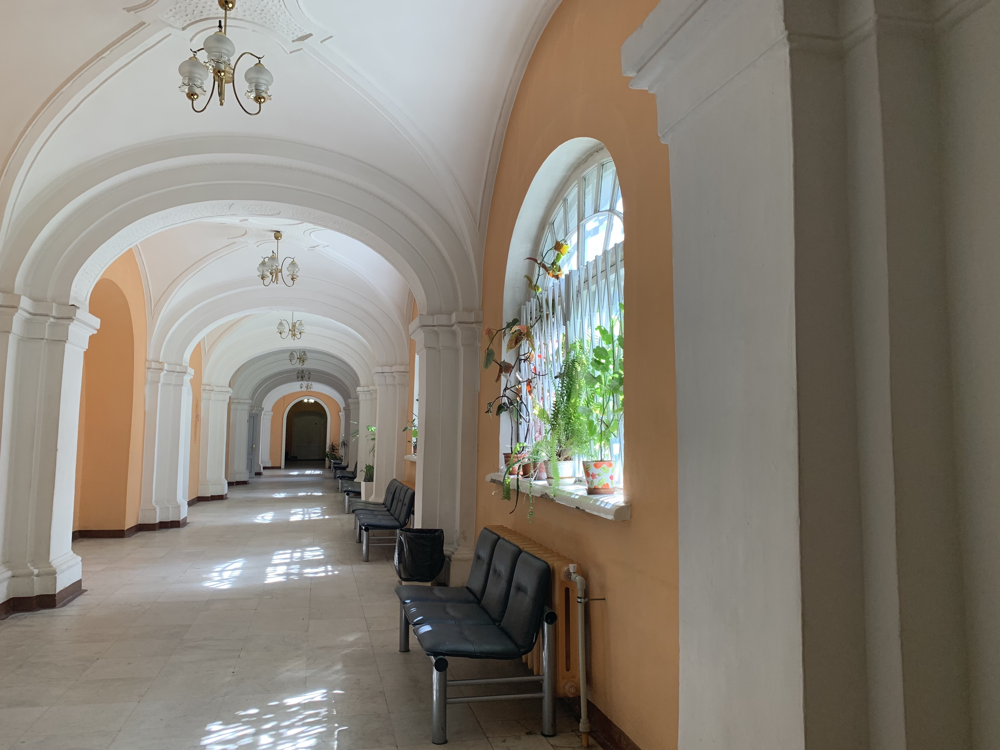

Welcome!
Welcome to your unconventional travel guide to St. Petersburg, Russia. This site is designed to be a personal companion for travlers who have found themselves drawn to one of Eastern Europe's most historic and visually striking cities and are not sure where to begin. This guide is a combination of practical travel information with observations from my own experience living in St. Petersburg for two months in 2019.


Top Historical Attractions
- State Hermitage Museum
- If you only have time to visit one museum in St. Petersburg, make it the Hermitage. Housed inside the Winter Palace, it's one of the largest art museums in the world, with millions of pieces spanning centuries of history. Even if you're not someone who spends hours in museums, the building itself is reason enough to visit. Between the grand staircases, ornate rooms, and incredible artwork, it's easy to spend an entire afternoon here without realizing where the time went. It was one of the first stops my traveling cohort made on our trip.
- Church of the Savior on the Spilled Blood
- Easily one of the most recognizable landmarks of St. Petersburg, I unfortunately did not get to visit this landmark, if only it was realized then that I may not ever get another opportunity!
- Smolny Convent
- One of the most peaceful and beautiful areas in the city. Fortunately for my cohort, it was our landing place for attending classes, and meeting up to venture around the city together.



